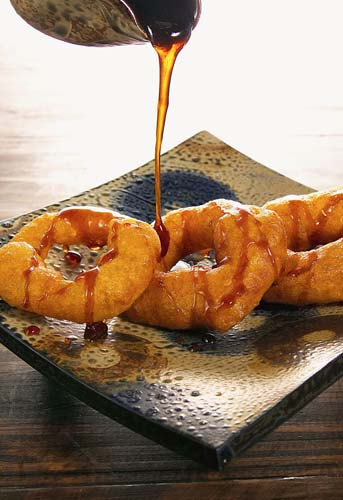

Picarones

Description: Picarones are iconic Peruvian sweet potato and squash donuts
shaped into rings, fried until crispy on the outside and soft inside, then
served warm with a spiced sugarcane syrup (chancaca).
Ingredients:
-
Dough base: 1/2 pound sweet potato (camote) and 1/2 pound butternut
squash (zapallo macre), peeled and cubed.
-
Yeast mixture: 1 packet (2 1/4 tsp) active dry yeast, 1 tablespoon
sugar, and 1/2 cup warm cooking liquid from the squash/sweet potato.
- Flour: 3 cups all-purpose flour.
-
Spices: 1 cinnamon stick, 3 whole cloves, and 1 tablespoon anise seeds.
-
Syrup (Chancaca syrup): 8 oz chancaca (or dark brown sugar/pela), 1 cup
water, 1 cinnamon stick, 2 cloves, and 1 orange peel.
- Oil: Neutral vegetable oil for deep frying.
- Optional additions: A pinch of salt or star anise in the syrup.
Steps:
-
Boil squash and sweet potato: Place cubed sweet potato, squash, cinnamon
stick, cloves, and anise seeds in a pot of water. Boil until soft
(around 15 to 20 minutes). Strain, reserving 1/2 cup of cooking liquid.
Mash the squash and sweet potato into a smooth puree and allow to cool.
-
Activate yeast: In a small bowl, combine warm reserved cooking liquid,
sugar, and active dry yeast. Let sit for 5 to 10 minutes until foamy.
-
Make the dough: In a large bowl, mix the cooled squash puree, activated
yeast mixture, and all-purpose flour. Beat briskly with your hands or a
wooden spoon for 8 to 10 minutes until sticky and elastic.
-
Proof dough: Cover the bowl with a damp cloth and let it rise in a warm
spot for 1.5 to 2 hours until doubled in size.
-
Prepare the chancaca syrup: Combine chancaca (or brown sugar), water,
cinnamon stick, cloves, and orange peel in a small saucepan. Simmer over
medium-low heat for 15 to 20 minutes until slightly thickened into a
syrup. Strain and set aside to cool slightly.
-
Shape and fry: Heat 2 inches of oil in a deep pan to 350°F (175°C). Wet
your hands with salted water, grab a small portion of dough, poke a hole
in the center with your thumb to form a donut ring, and drop it
carefully into the hot oil. Fry for 1 to 2 minutes per side until golden
brown.
-
Serve: Drain fried picarones on paper towels. Serve hot drizzled
generously with warm chancaca syrup.
Home